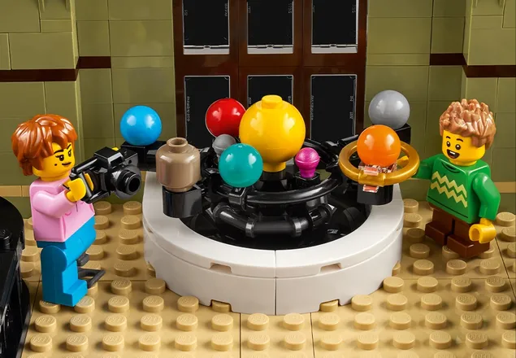

Museo de Historia Natural
Descubre los huesos ocultos en la sala
Descubre un espacio de relajación con el set de construcción de maquetas LEGO® Icons Museo de Historia Natural (10326) para adultos. Esta nueva incorporación a la serie Modular Buildings alberga numerosas piezas de exposición, como un esqueleto de Braquiosaurio que se alza a través de un atrio hasta la 2.ª planta del museo.
Embárcate en un viaje lleno de satisfacciones con este fabuloso set LEGO a medida que das forma a cada detalle. La primera planta está dedicada a piezas relacionadas con la historia natural y la segunda a artefactos del ámbito de la ciencia y el espacio, con una exposición independiente sobre sets LEGO clásicos. La cubierta del edificio, donde está la oficina del comisario, cuenta con 2 claraboyas que permiten bañar de luz el interior. El set incluye 7 minifiguras.
Este set es tanto un proyecto envolvente para ti como un fantástico regalo de cumpleaños para amantes de los museos de ciencias e historia. Conoce la amplia gama de kits de construcción LEGO para adultos.

- Proyecto de construcción de la maqueta de un museo: Tómate tiempo para disfrutar de una relajante actividad con el set de construcción LEGO® Icons Museo de Historia Natural, diseñado para adultos
- ¿Qué contiene la caja? Todo lo que necesitas para construir un museo LEGO® Icons y las numerosas piezas de exposición relacionadas con la historia natural y la ciencia que alberga, además de 7 minifiguras
- Características y funciones: A los fans de los sets LEGO® singulares les encantará esta maqueta de un edificio con claraboyas. Estas permiten el paso de la luz, que baña sus 2 niveles e ilumina un enorme esqueleto de Braquiosaurio
- Set de construcción creativa: Sumérgete de lleno en el proceso de dar forma a cada detalle pieza a pieza y, después, expón tu creación para que todos puedan disfrutarla
- Idea de regalo LEGO® para amantes de la historia y los museos: Regala el set de construcción LEGO Icons Museo de Historia Natural a un fan adulto de la geología, la astronomía, la ciencia y los dinosaurios
- Instrucciones de construcción digitales: La app LEGO® Builder incluye una versión digital de las instrucciones de construcción que vienen con este set LEGO Icons
- Proyectos LEGO® para adultos: Este proyecto LEGO Icons pertenece a la colección Modular Buildings, una serie de sets de construcción avanzados diseñados para adultos
- Dimensiones: Esta maqueta de 4014 piezas mide aproximadamente 31 cm de altura, 39 cm de anchura y 25 cm de profundidad
¿Que hay en tu nuevo museo?

|

|

|
| Oficina del comisario |
Exposiciones de astronomía |
Antiguos artefactos |
| ¡Con acceso exclusivo solo para el personal!
| Cuenta los planetas que forman nuestro sistema solar. |
Descubre elementos de sets LEGO clásicos. |

|

|
| Una vista galáctica |
Limpiacristales |
| Observa las estrellas a través del telescopio.
| ¡Basado en un diseñador LEGO real! |